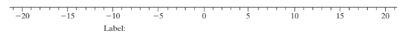

Section7.2Comparing two means: Simulation-based approach
A worksheet for Grace College from Zybooks
SubsectionLingering effects of sleep deprivation
SubsectionSTEP 1: Ask a research question.
Many students pull “all-nighters” when they have an important exam or a pressing assignment. Concerns that may arise include: Can you really function well the next day after a sleepless night? What about several days later: Can you recover from a sleepless night by getting a full night’s sleep on the following nights?
Exercise7.2.1.
What is your research conjecture about whether one can recover from a sleepless night by getting a full night’s sleep on the following nights? What are some other related questions that you would be interested in investigating related to this issue?
SubsectionSTEP 2: Design a study and collect data.
Figure7.2.1.Figure 741: Subjects were flashed the screen on the left and then it was masked by the screen on the right Then subjects were asked whether they had seen an L or a V and whether the slanted lines were placed vertically or horizontally
After the training period, subjects were tested. Performance was recorded as the minimum time (in milliseconds) between the appearance of stimuli and an accurate response. Following these baseline measurements, one group was randomly assigned to be deprived of sleep for 30 hours, followed by two full nights of unrestricted sleep, whereas the other group was allowed to get unrestricted sleep on all three nights. Following this, both groups were retested on the task to see how well they remembered the training from the first day. Researchers recorded the improvement in performance as the decrease in time required at retest compared to training. (Note: For example, if someone took 5 milliseconds (ms) to respond at the beginning of the study and then 2 ms to respond at the end, the improvement score is 3 ms. But if someone took 2 ms at the beginning and then 5 ms at the end, the improvement score is -3 ms.)
The goal of the study was to see whether the improvement scores tend to be higher for the unrestricted sleep treatment than for the sleep deprivation treatment.
Exercise7.2.2.
Identify the explanatory and response variables in this study. Also classify them as either categorical or quantitative.
Exercise7.2.3.
Was this an experiment or an observational study? Explain how you are deciding.
Exercise7.2.4.
Let \(\mu_u\) (u for unrestricted) be the long-run mean improvement on this task three days later when someone has had unrestricted sleep and let \(\mu_d\)(d for deprived) denote the long-run mean improvement when someone is sleep deprived on the first night. In words and symbols, state the null and the alternative hypotheses to investigate whether sleep deprivation has a negative effect on improvement in performance on visual discrimination tasks. (Hint: For the alternative hypothesis: Do you expect the people to do better or worse when sleep deprived? Based on your answer, what sign/direction should you choose for the alternative hypothesis?)
Here are the data, with positive values indicating better performance at retest than at training, and negative values indicating worse performance at retest than at training:
SubsectionSTEP 3: Explore the data.
Exercise7.2.5.
To look at graphical and numerical summaries of the data from the study, go to the Multiple Means 2 applet. The sleep deprivation data have already been entered into the applet.
(a)
Notice that the applet creates parallel dotplots, one for each study group. Based on these dotplots alone, which group (unrestricted or deprived) appears to have had the higher mean improvement? How are you deciding?
(b)
Based on the dotplots alone, which group (unrestricted or deprived) appears to have had more variability in improvement? How are you deciding?
(c)
Notice also that the applet also computes numerical summaries of the data, such as the mean and standard deviation (SD) for the improvements in each group. For the unrestricted group, record the sample size (n), mean, and SD. For the deprived group, record the sample size (n), mean, and SD.
Recall from earlier in the course that the standard deviation is a measure of variability. Relatively speaking, smaller standard deviation values indicate less variability and a distribution whose data values tend to cluster more closely together, compared to a distribution with a larger standard deviation.
(d)
Based on the numerical summaries reported in #5(c), which group (unrestricted or deprived) had the higher mean improvement?
(e)
Based on the numerical summaries reported in #5(c), which group (unrestricted or deprived) had the higher variability in improvement?
(f)
Notice that the applet also reports the observed difference in means for the improvements of the two groups. Record this value (and its measurement units).
(g)
Before you conduct an inferential analysis, does this difference in sample means (as reported in #5(f)) strike you as a meaningful difference? Explain your answer.
SubsectionSTEP 4: Draw inferences beyond the data.
Exercise7.2.6.
What are two possible explanations for why we observed the two groups to have different sample means for improvement in performance?
Exercise7.2.7.
Describe how you might go about deciding whether the observed difference between the two sample means is statistically significant. (Hint: Think about how you assessed whether an observed difference between two sample proportions was statistically significant. Use the same strategy, with an appropriate modification for working with means instead of proportions.)
Once again the key question is how often random assignment alone would produce a difference in the groups at least as extreme as the difference observed in this study if there really were no effect of sleep condition on improvement score. You addressed similar questions before when you analyzed the dolphin therapy and yawing studies. The only change is that now the response variable is quantitative rather than categorical, so the relevant statistic is the difference in group means rather than the difference in group proportions. Also once again, we use simulation to investigate how often such an extreme difference would occur by chance (random assignment) alone (if the null hypothesis of no difference/no effect/no association were true).
In other words, we will again employ the 3S strategy.
Subsection1. Statistic:
Exercise7.2.8.
A natural statistic for measuring how different the observed group means are from each other is the difference in the mean improvement scores between the two groups. Report the value of this statistic, as you did in #5(f).
Subsection2. Simulate:
Exercise7.2.9.
You will start by using index cards to perform a tactile simulation of randomly assigning the 21 subjects between the two groups, assuming that sleep condition has no impact on improvement.
Because the null hypothesis asserts that improvement score is not associated with sleep condition, we will assume that the 21 subjects would have had exactly the same improvement scores as they did, regardless of which sleep condition group (unrestricted or deprived) the subject had been assigned.
(a)
How many index cards do you need to conduct this simulation?
(b)
What will you write on each index card?
To conduct one repetition of this simulation:
Shuffle the stack of 21 cards well and then randomly distribute cards into two stacks: one stack with 10 cards (the unrestricted group) and one with 11 (the sleep-deprived group).
Calculate and report the sample means for each rerandomized group:
• Rerandomized unrestricted group’s mean:
• Rerandomized deprived group’s mean:
Calculate the difference in group means: unrestricted mean minus sleep-deprived mean. Report this value.
Combine this result with your classmates’ to create a dotplot that shows the distribution of several possible values of difference in sample means that could have happened due to pure chance if sleep condition has no impact on improvement. Sketch a dotplot on an axis like the one shown being sure to label the horizontal axis.

(c)
At about what value is the dotplot centered? Explain why this makes sense. (Hint: What are we assuming to be true when we conduct the simulation?)
(d)
Where is the observed difference in means from the original study (as reported in #8) on the dotplot? Did this value happen often, somewhat rarely, or very rarely? How are you deciding?
As before with simulation-based analyses, you would now like to conduct many, many more repetitions to determine what is typical and what is not for the difference in group means, assuming that sleep condition has no impact on improvement score. We think you would prefer to use a computer applet to do this rather than continue to shuffle cards for a very long time, calculating the difference of group means by hand.
Exercise7.2.10.
Go back to the Multiple Means 3 applet, check the Show Shuffle Options box, select the Plot display, and press Shuffle Responses.
(a)
Describe what the applet is doing and how this relates to your null hypothesis from #4.
(b)
Record the simulated difference in sample means for the rerandomized groups, as given in the applet output. Is this difference more extreme than the observed difference from the study (as reported in #8)? How are you deciding?
(c)
Click on Shuffle Responses again and record the simulated difference in sample means for the rerandomized groups. Did it change from #10(b)?
(d)
Click on Shuffle Responses again and record the simulated difference in sample means for the rerandomized groups. Did it change from #10(b) and #10(c)?
(e)
Now to see many more possible values of the difference in sample means, assuming sleep condition has no impact on improvement, use the Multiple Means applet:
• Change Number of Shuffles from 1 to 997.
• Press Shuffle Responses to produce a total of 1,000 shuffles and rerandomized statistics.
Consider the histogram of the 1,000 could-have-been values of difference in sample means, assuming that sleep condition has no effect on improvement.
(f)
What does one observation on the histogram represent? (Hint: Think about what you would have to do to put another observation on the graph.)
(g)
Describe the overall shape of the null distribution displayed in this histogram.
(h)
Where does the observed difference in sample means (as reported in #8) fall in this histogram: near the middle or out in a tail? Are there a lot of observations that are even more extreme than the observed difference, assuming sleep condition has no impact on improvement? How are you deciding?
(i)
To estimate a p-value, continue with the Multiple Means applet.
• Type in the observed difference in group means (as reported in #8) in the Count Samples box (for the one-sided alternative hypothesis) and press Count.
• Record the approximate p-value.
(j)
Fill in the blanks of the sentence to complete the interpretation of the p-value. The p-value of _______ is the probability of observing ______________ _________________ assuming ________________________________.
Subsection3. Strength of evidence:
Exercise7.2.11.
Based on the p-value, evaluate the strength of evidence provided by the experimental data against the null hypothesis that sleep condition has no effect on improvement score: not much evidence, moderate evidence, strong evidence, or very strong evidence?
Exercise7.2.12.
Significance: Summarize your conclusion with regard to strength of evidence in the context of this study.
Exercise7.2.13.
(a)
Use the 2SD method to approximate a 95% confidence interval for the difference in long-run mean improvement score for subjects who get unrestricted sleep minus the long-run mean improvement score for subjects who are sleep deprived. (Hints: Remember the observed value of the difference in group means and obtain the SD of the difference in group means from the applet’s simulation results. The interval should be observed difference in means ±2SD, where SD represents the standard deviation of the null distribution of the difference in group means.)
(b)
Interpret what this confidence interval reveals, paying particular attention to whether the interval is entirely positive, entirely negative, or contains zero. (Hint: Be sure to convey “direction” in your interpretation by saying how much larger improvement scores are on average for the treatment you find to have the larger long-run mean: I’m 95% confident that the long-run mean improvement score is __________ to ________ higher with the _________ treatment as opposed to the _________ treatment.)
SubsectionSTEP 5: Formulate conclusions.
Exercise7.2.14.
Generalization: Were the participants in this study randomly selected from a larger population? Describe the population to which you would feel comfortable generalizing the results of this study.
Exercise7.2.15.
Causation: Were the participants in the study randomly assigned to a sleep condition? How does this affect the scope of conclusion that you can draw?
SubsectionExploring Further: Another Statistic
Could we have chosen a statistic other than the difference in group means to summarize how different the two groups’ improvement scores were? Yes, for example we could have used the difference in group medians. Why might we do this? For one reason, the median is less affected by outliers than the mean.
To analyze the difference in group medians, we carry out the 3S strategy as before, except:
We calculate the observed value of the difference in medians as the statistic.
After we conduct the rerandomizing, we calculate the difference in medians for the rerandomized data. Then we repeat this process a large number of times.
We determine the p-value by counting how many of the simulated statistics are at least as large as the observed value of the difference in medians.
Return to the Multiple Means 4 applet and use the Statistic pull-down menu (on the left) to select Difference in Medians.
Exercise7.2.16.
From the Summary Statistics for the original data, record the median improvement score for each group. Also record the difference between the medians (unrestricted median minus deprived median).
Exercise7.2.17.
Enter 1000 for Number of Shuffles and press Shuffle Responses. Describe the resulting null distribution of difference in group medians. Does this null distribution appear to be centered near zero? Does it seem to have a bell-shaped distribution?
Exercise7.2.18.
To calculate a p-value based on the difference in medians, enter the observed value in the Count samples box. Then press Count. Report both the value that you enter into the applet and the resulting p-value.
Exercise7.2.19.
Does this p-value indicate strong evidence that sleep deprivation has a harmful effect on improvement score? Explain how you are deciding.
Exercise7.2.20.
With which statistic (difference in means or difference in medians) do the data provide stronger evidence that sleep deprivation has a harmful effect on improvement score? Explain how you are deciding.
SubsectionSTEP 6: Look back and ahead.
Exercise7.2.21.
Looking back: Did anything about the design and conclusions of this study concern you? Issues you may want to critique include: any mismatch between the research question and the study design, how the experimental units were selected, how the treatments were assigned to the experimental units, how the measurements were recorded, the number of experimental units in the study, and whether what we observed is of practical value. Looking ahead: What should the researchers’ next steps be to fix the limitations or build on this knowledge?